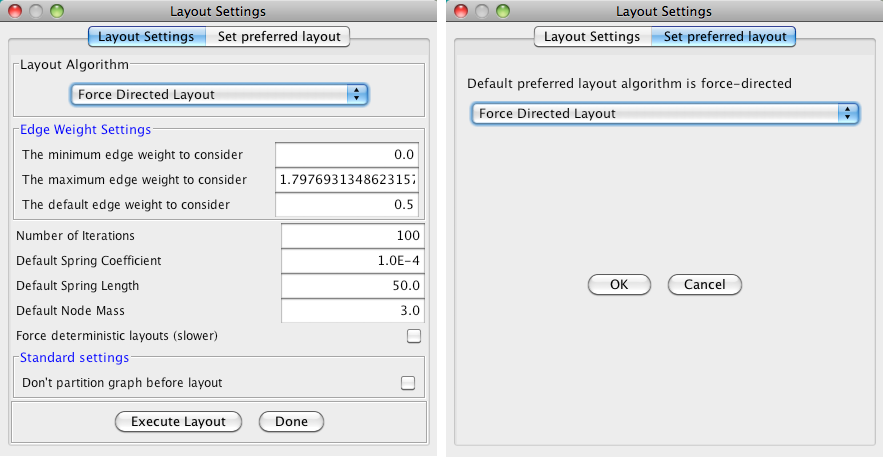
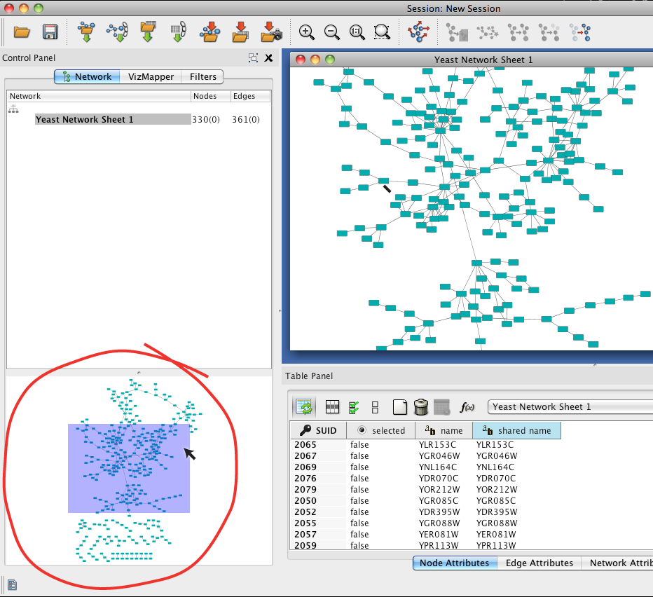
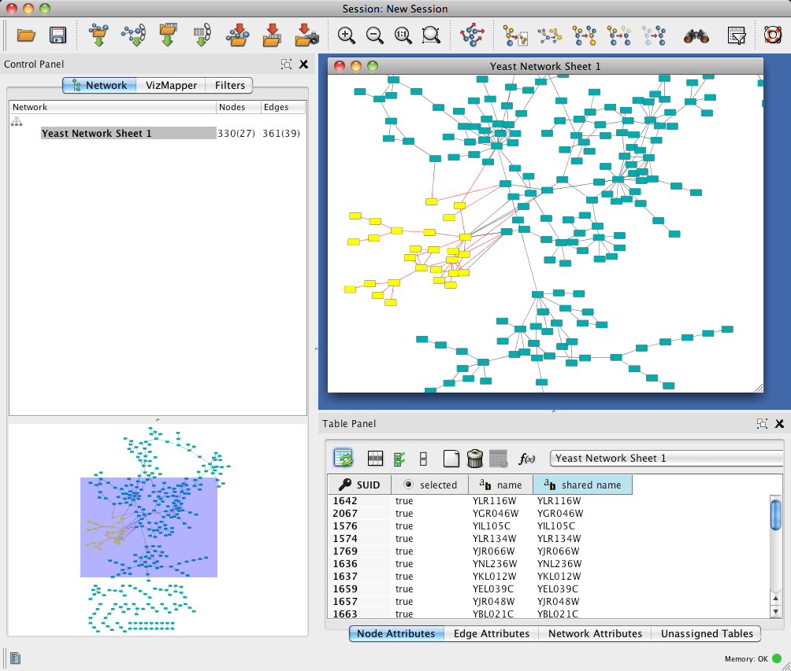

| Click on this toolbar icon to apply the preferred layout to the network. | |
| Optional. You can try different layouts available under the
Layout menu. You can adjust layout parameters by going to
Layout>Settings...
by selecting a Layout Algorithm. Click on the Set
preferred layout to change the layout associated with the toolbar
icon
. The dialog will look like this:
 |
|
| Optional. Use the toolbar icons
to zoom in and out,
fit-to-screen, and fit-to-selection. Zoom can also be controlled by
a mouse scroll wheel. Panning can be controlled by a mouse middle
button, by
command-click-and-drag on the network directly, or by click-and-drag on the bird's eye view.
 |
|
| Click-and-drag over an area of the network to select a
set of nodes. Click on any selected node to drag selection. Also
notice information on selected nodes in the Table Panel below
the network.
Here is what selected nodes look like:  |
|
| Click on the Edge Attributes tab at the bottom of the Table Panel to view information on selected edges. |